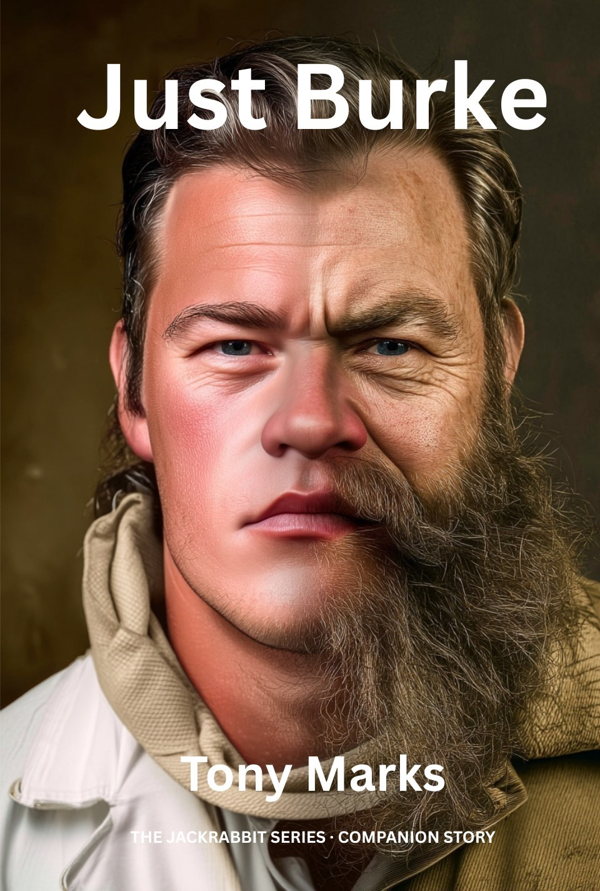

Just Burke
A Companion Story to The Jackrabbit Series

Just Burke
A Companion Short Story to The Jackrabbit Series
Status: eBook published · Paperback forthcoming
Synopsis
Thirty-one years before Jack Abbott walks into his workshop, Burke is a final-year student named Quentin — brilliant, isolated, and too tall for the chairs he keeps trying to sit in.
He has ambitions. A place at OmniFab's Research and Development arm, perhaps — the kind of career that justifies the loneliness of being the cleverest person in most rooms. To get there, he has chosen the hardest project on the list: a problem the field has spent a century failing to solve.
What he doesn't yet understand is what kind of company OmniFab really is. What kind of system he is preparing to enter. And what happens to a young man who, in good faith, hands over the most important work he has ever done.
The journey from that betrayal to a small workshop on Horizon Outpost is shorter than it ought to be — and longer than he could have imagined.
Just Burke is a standalone companion to the Jackrabbit series. A story about being the smartest person in the room, and discovering that intelligence isn't enough. About what gets stripped away, and what is left when it's gone.
Where to Start
Newcomers can read Just Burke as an introduction to the world of the Jackrabbit series — a self-contained story that needs no prior reading. Existing readers will recognise the man Jack would one day come to trust.
At a Glance
- Format: Short story (approx. 50 pages)
- Place in the timeline: Thirty-one years before Stolen Freedom
- Reading order: Standalone — can be read before, after, or alongside the main series
- Featured character: Burke, as a young man
Explore the Universe
- Burke — the engineer Jack will meet decades later in Wings of Freedom.
- The Consortium — the corporate bloc that produces companies like OmniFab.
- Governance — how corporate authority is exercised, and how it absorbs the work of those who serve it.
- Artificial General Intelligence — the forbidden technology whose suppression shapes every career, including Quentin's.